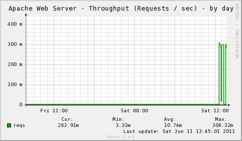
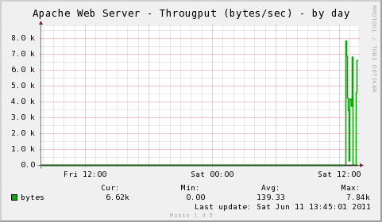
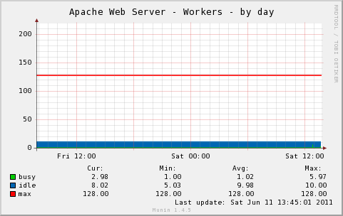

The multigraph plugin implements the following graphs:
|  |  |
|  |
| Variable | Description |
|---|---|
| host | Apache Web Server Host. (Default: 127.0.0.1) |
| port | Apache Web Server Port. (Default: 80, SSL: 443) |
| user | User in case authentication is required for access to server-status page. |
| password | User in case authentication is required for access to server-status page. |
| statuspath | Path for Apache Web Server Status Page. (Default: server-status) |
| ssl | Use SSL if yes. (Default: no) |
| include_graphs | Comma separated list of enabled graphs. (All graphs enabled by default.) |
| exclude_graphs | Comma separated list of disabled graphs. |